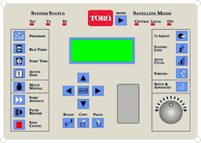

The Toro Company—maker of those iconic red lawn mowers—also sells golf course irrigation systems. They asked Cooper to help overhaul their irrigation offerings. While another team undertook a long project to rethink Toro’s irrigation software, I spent three weeks redesigning the hardware interface to their system. My design will appear on their next-generation product.
A golf course irrigation system is usually managed by a central computer, but it is also served by 30 or 40 “satellites”: waist-high metal boxes that control the flow of water to as many as 100 sprinkler heads. The satellite faceplate offers controls for manually programming the irrigation.
Due to various technical, environmental and cost constraints, the interface hardware was extremely limited: push buttons, a knob, LEDs and a tiny 4 by 20 character LCD. On the lower right is Toro’s initial mockup of their new faceplate. The number of buttons is overwhelming, and there's no clear logic to the control layout.
Our challenge was to minimize the button clutter while still providing quick access to the handful of tasks that are commonly performed on the satellite.
I grouped the cursor keys, knob and LCD together so that their relationship is clearer. An irrigation technician can then manipulate the on-screen interface using both hands: the arrow keys move the cursor from field to field, while the knob changes the selected field’s value.
The number of buttons was cut in half, and I worked with a visual designer to use color and layout to better organize the remaining ones.
Even more important than cleaning up the layout was simplifying the on-screen interface. By changing the interface options to conform more closely to the irrigation tech’s mental model, I was able to give users more control with fewer button presses.
